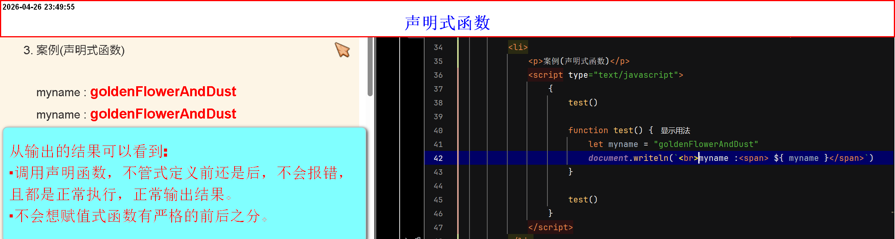
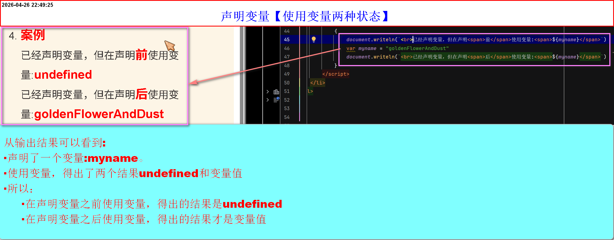
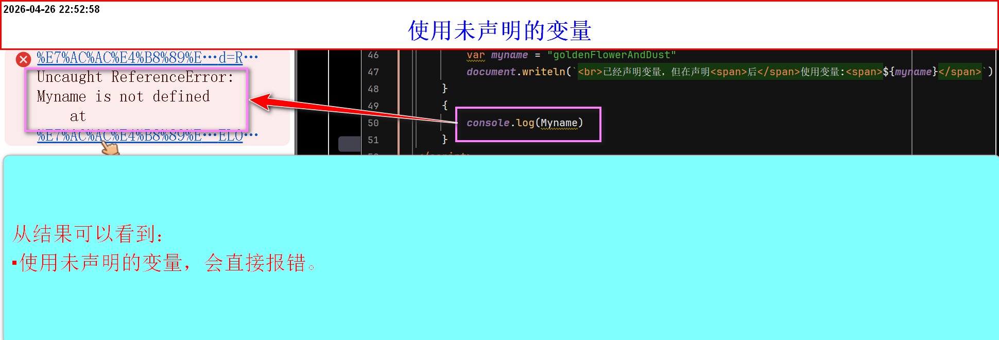
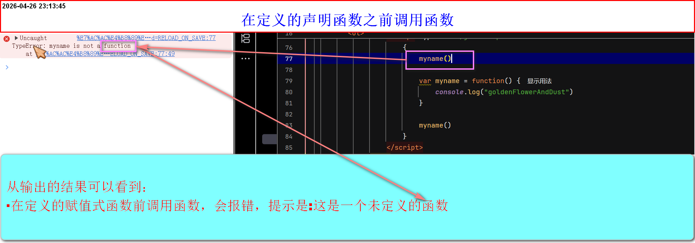
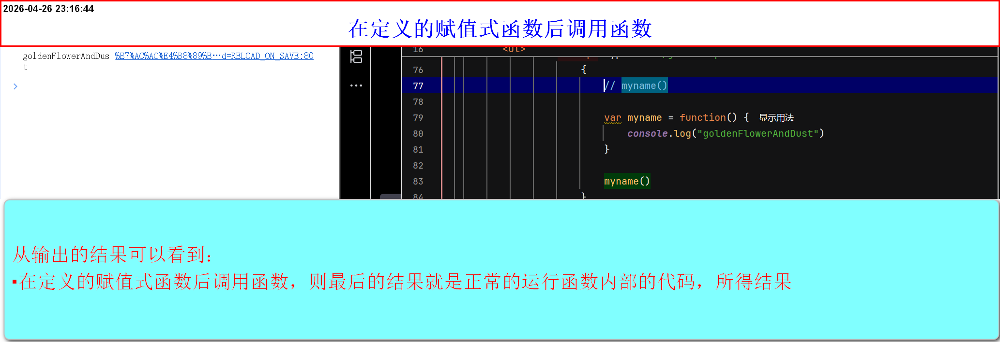
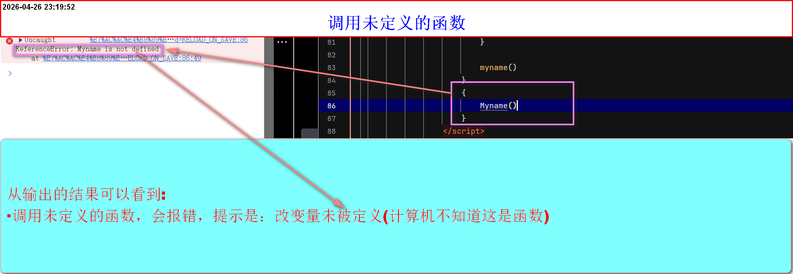
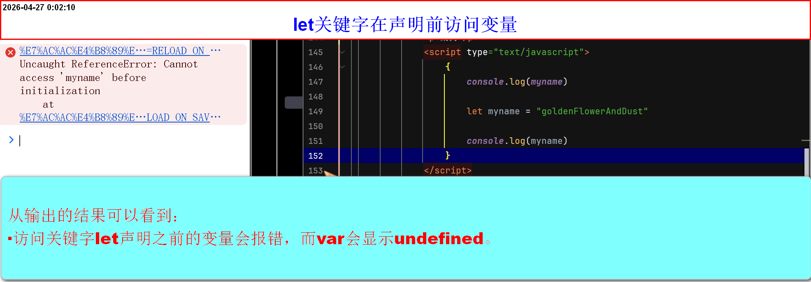
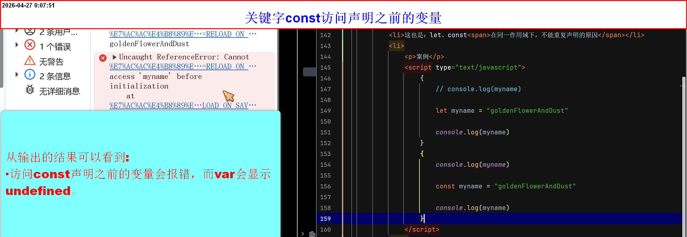
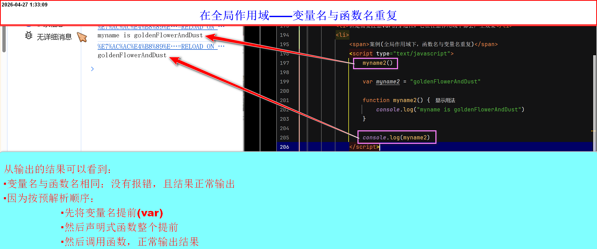
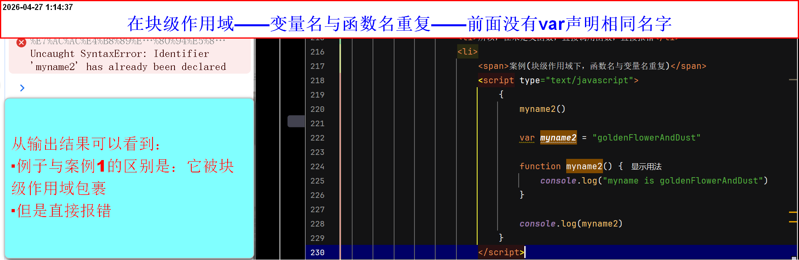

函数预解析和重命名问题
预解析
- 预解析其实就是JS的编译和执行
- JS是一个解释型语言，就是在代码执行之前，先对代码进行通读和解释，然后在执行代码
- 也就是说，JS代码运行的时候，会经历两个环节解释代码和执行代码
-
关于 script 标签与预解析的独立性
- 每个 script 标签内部的代码会独立进行预解析
- 浏览器在执行 JS 时，会按顺序处理每个 script 块
- 每个 script 块在开始执行前，都会先进行自己的“预解析”（变量提升、函数提升等），然后执行该块内的代码。
- 不同 script 块之间的预解析是相互隔离的，不会混合
- 虽然预解析各自独立，但执行代码时，前面 script 中声明的全局变量或函数，后面 script 是可以访问的（因为全局作用域是同一个）。
- 但预解析阶段，每个 script 只会提升自己内部的声明，不会提前看到另一个 script 中的声明。
-
解释代码
- 因为在所有代码执行之前进行解释，所以叫做预解析(预解释)
-
需要解析的内容有三个
-
声明式函数
- 在内存中先声明一个变量名和函数名，并且这个名字代表的内容是一个函数
- 声明式函数在预解析阶段，会将整个函数提前，这就会导致一种结果：不管是调用声明前还是声明后都不会报错，且是正常执行
- 因为只是提升整个函数，所以，想要直接访问函数内部的变量依然会出问题，因为不在同一作用域
-
案例(声明式函数)

-
关键字
var- 在内存中先声明有一个变量名
- 意思就是：会先将声明的变量，存放在一个内存中，当执行到需要的地方，才会从内存中调用出来，并赋值
-
因为是先储存(先重头看到尾，将声明的变量放在前面[可以理解为计算机心中有数])再执行，所以会有两种情况：
- 若在声明变量前使用变量 → 值为
undefined - 若在声明变量后使用变量 → 值为变量实际值
- 若变量不存在(使用未声明的变量，会直接报错)
- 若在声明变量前使用变量 → 值为
-
赋值式函数同样是的道理
- 赋值式函数（函数表达式） 的变量名会预解析（提升），但函数体不会提升。所以：
- 在赋值之前调用：变量存在但值为
undefined，因此会报错（提示 xxx is not a function）。 - 在赋值之后调用：正常执行。最后的结果就是运行函数内部代码所得结果
- 若赋值式函数未被定义(会报错，但提示是：这个未定义(没有明确说这是一个函数))
- 注意以上结论都是再
var关键字为前提 -
案例1(var与变量)


-
案例2(var与函数)



-
关键字
let、const- 变量声明也会被提升，但不会被初始化为
undefined，而是进入“暂时性死区”（TDZ） - 在声明之前访问变量会报错 ReferenceError
- 这避免了 var 可能带来的意外 undefined 问题
- 这也是：let、const在同一作用域下，不能重复声明的原因
-
案例


- 变量声明也会被提升，但不会被初始化为
-
重命名问题
- var声明的变量，可以重复声明，后面声明的会覆盖前面的
- var可以在不同的作用域实现覆盖，所以尽量避免使用var声明变量，会污染函数作用域
- let，const声明的变量，在同一作用域下，不能重复声明
- let声明的变量，它的值可以是
可以不赋值，能是undefined - const声明的变量，一定要赋值，不能是undefined，不然会报错
- 声明函数，当函数名相同时，不管是前面调用还是后面调用函数，靠后声明的函数会覆盖前面的声明函数
-
当声明的变量名与函数名函数名相同相同的时候，调用函数(或访问变量)会产生两种不一样的效果
第一种在，全局作用域下，函数名与变量名重复:- 在全局作用域下，声明式函数会被整体提升（函数提升优先于 var 变量提升）
- 一般不会报错，会受预解析的影响
- 但是需要注意var的穿透性，它在任意作用域下都会产生效果,会覆盖前面的结果
-
案例1(全局作用域下，函数名与变量名重复)

- 在 ES6 的块级作用域中，函数声明的行为类似于 let
- 所以，在未定义函数，直接调用函数，直接报错
-
案例2(块级作用域下，函数名与变量名重复)
